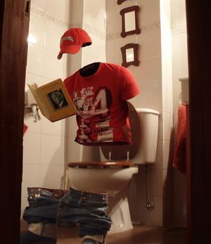

Los protegidos
 De: La Frikipedia, la enciclopedia extremadamente seria.
De: La Frikipedia, la enciclopedia extremadamente seria.
De la serie Programas de TV:
En esta serie salen niños haciendo esto
| Idioma original:
|
aspañol
|
| Creador:
|
Ortega Cano, Matías Prats, José Mota
|
| Duración:
|
¿contando los anuncios?
|
| No. Episodios:
|
Muchos
|
| No. Temporadas:
|
3
|
| ¿Aún se transmite?:
|
Próximamente la tercera temporada
|
| Género:
|
Acción, aventuras, fantasía
|
| Nivel de frikismo:
|
Excesivo; peligroso para el consumo humano
|
| Películas:
|
Con suerte, no se hará ninguna.
|
La primera serie española en 3D, El doble de Sandra es Ana Obregón
«Mario ese coche nos pita »
~ Lucía en el coche a 1 por hora
«Pues sera alguien que me conocerá »
~ Mario contestando a Lucía
«Creo que si que te conoce, se estaba acordando de tu madre»
~ Lucía leyendo la mente al conductor follonero
«¿Que es un tocawebos?»
~ Lucía preguntando a Culebra
Los protegidos es una cutre serie hipaniola emitida por Danpena 3. Cuenta la historia de un grupo de X-Men fracasados que huyen de hombres de negro y chicas de alterne. Tras raptar a la hija de un muerto se van con el coche a un pueblo en el que conviven una panda de hijos de puta, yonkis y salidos.
Historia
La historia comienza cuando Blanca, una niña repelente tiene el poder de la premonición y el cambio de dedad (ya que cada vez que la mencionan tiene una edad diferente), sorprende a sus padres cuando iban a hacer el 'acto'. La madre (Xiximena) no le hace ni puto caso cuando dice que le van a raptar unos hombres de negro y que le iban a robar los imanes de la nevera. Esa noche se llevan a la cría, Xiximena sale de la casa ligera de ropa y bajo la lluvia intentado impedirlo y gritando como una loca. Los vecinos salen de sus casas asombrados de que se le trasparenten el sostén y las bragas.
Paralelamente, Carlitos Castillo sufre una crisis de autoestima, al considerarse un niño raro, porque es miope, asmático, menopáusico, alérgico a la lana y el agua, le gustan los cuentos de hadas y princesas, etc. y por si fuera poco ahora puede mover cosas con la mente. Al ser su padre (llamado Mario) paleto, cree que su hijo sufre un tipo de desviación sexual.
Las vidas se hunden en la miseria, en la penuria y la herejia, ya que Xiximena intenta invocar a demonios del averno para traer devuelta a Blanca en un cuerpo de perro. Hasta que la vida de Xiximena y Mario se cruzan en una comisaria de policía. Mario siente una atracción por Xiximena, porque todo el mundo cree que es una loca que se inventó a su hija con superpoderes desaparecida para dar explicacion a su soledad. Mario se entera de que su hijo tiene poderes al intentar volarle la cabeza con una bola de bolos a la vecina de enfrente que siempre le da pellizcos y pone el sálvame a todo volumen.
Xiximena, establece contacto con el gato de Piolín (Silvestre) que se dedica a proteger a niños con poderes de Piolín de los hombres de negro, las chicas de alterne y del rechazo social. Uno de los cuales es una niña (Lucia) que puede leer la mente a la gente y saber sus pensamientos mas oscuros y eróticos. Para que Xiximena pueda tener mas información de los que secuestraron a su hija, Silvestre le presenta a Culebra, un chico problemático, esquizofrénico, cleptómano, por la que un montón de tías pierden el culo y que además puede acerse invisible.
Por otra parte, Sarasa Sandra electrocuta a su hermana y se va de casa para que no la encarcelen. En su rol de convicta conoce a Culebra, que intenta robarle y para defenderse le hace una inseminación artificial por medio de electrodos. Culebra se disculpa y le dice que le llevara para conocer a Silvestre.
Mario pide a Ximena que le explique lo de los poderes porque no entiende como el hijo puede lanzar cuchillos jamoneros al cura de la catequesis sin tocarlos siquiera. Entonces le lleva a ver a Silvestre.
En mientras, visitan a Silvestre unos hombres de negro que lo matan y Lucia huye con su muñeca Nancy Oken Mata-bibers. El grupillo de protagonistas descubren el fiambre y huyen de la casa para que la policía no les involucre. Lo malo es que el paleto de Mario se a dejado la mochila del niño donde ponia la dirección, el teléfono móvil, el teléfono fijo, una foto familiar, el e-mail, el msm, la contraseña y hasta el DNI. Claro, que el hijo no podia estar atento a la mochila porque se entretenía en mirar las bragas a Nancy Oken Mata-bibers.
Entonces deciden huir a un pueblo, comprarse una casa y fingir ser una familia normal donde la madre a parido 4 hijos y tiene la vagina reventada. Durante toda la historia intentan que no le descubran, habiendo una cotilla con un policía viviendo al lado, que tienen como hijos a una zorri-pija anorexica y a un niño retrasado de 7 años. Para hacer menos notable su presencia apuntan a los críos al colegio mas pijo jamas contado.
Personajes
 Culebra haciendo de vientre.
- Carlos Castillero: es el crío capaz de mover cosas a distancia mediante
red wifi la mente, desde un grano de arroz hasta la nevera de Falete. Tiene una obsesión por los cuentos de hadas, princesas y arcoiris. Es rechazado en la escuela por su afición por la lectura, la posesión de gafas, su asma, su anemia, su alergia a la lana, el parazetamol, la viagra y el agua, y sus fobias a los chinches y al numero 2.
- Lucia Castillero: puede leer la mente, sabe lo que piensan los adultos por lo que es una niña muy espabilada. Sabe ya el secreto de la marabilla de la naturaleza e incluso como se formó el universo realmente, hasta sabe el numero de telefono de Obama. A estado enésimas veces en reformatorios y orfanatos, porque los padres no querían una niña prodigio en su familia.
- Sandra Castillero: es la adolescente pasivo-agresiva que puede alimentar con energia una ciudad entera. Su afición es ponerse nerviosa, destruir bombillas y chamuscar gente. Se preocupa porque nunca va a poder besar ni tener relaciones con una persona sin electrocutarla.
- Poli XD Castillero: más conocido como Culebra, aunque no se sabe porque. Algunas tesis son: que se desliza como un reptil, que le hace la culebra a muchas chicas, o que exagera del tamaño de su miembro viril. Por lo que muchas chicas pierden el culo. Es un chico problemático, esquizofrenico, vandalico y cleptomano que se hace invisible. Esta dentro de un triangulo amoroso entre si mismo y Sandra, a la que ama por saber como romper farolas sin que la pillen.
- Lucas Castillero: es un friki de los comics de superheroe que toca gente para travestirse. Se puede hacer pasar por cualquier persona, como se puede hacer en habbo. Solo tiene un amigo (que en la segunda temporada se va de la serie, y como consecuencia se queda sin amigos). No se sabe defender y se deja avasallar.
- Mari@ Castillero: es el padre de Carlos en realidad y supuesto padre de todos los anteriores (menos Lucas, que es su supuesto sobrino). Es un paleto distraido que siempre mete la pata en todo. Consigue trabajo en el colegio pijo y lo despiden porque los niños podían con el.
- Xiximena Castillero: es la supuesta mujer de Mario y la que lleva los pantalones en la casa. Es más espabilada y en todas las dos primeras temporadas intenta recuperar a su hija de los hombres de negro. Si no fuera por ella Mario se habría suicidado hace tiempo.
- Ángel Comosellame que se llama en realidad Victor y Ángel es el nombre de culebra: durante la segunda temporada hace el papel de novio de Sandra que se viene a la casa de los castillo para pasar unos di-itas. En realidad salva a Sandra de los hombres de negro que la querían usar como electrodos en un fisio. Se pasa toda la temporada intentando matar a Sandra para vengarse de Culebra (que es su hermano) pero que luego se enamora intenta acoplarse en la famila y lo matan al final de la segunda temporada MENUDA PELICULA SE HAN MOTADO . Tenia el poder de traspasar paredes para colarse en residencias femeninas robarles la ropa y mandarselas a desesperados. También podía ponerse duro para matar gente.
- Blanca Cascara de Huevo: es la cría que raptan los hombres de negro e intentan rescatar durante las dos temporadas primeras. Tiene el poder de ver el futuro y cambiar de edad (porque cada vez que la mencionan tiene una edad diferente). Los hombres de negro se proponían utilizarla para predecir el número de la lotería o hacer un programa engañabobos que se llamara Pitonisa blanca.
Familia Rumano
- Rosa Rumano: es la cotilla que se quiere enterar de todo y sale en un anuncio de McDonall. Para enterarse de lo que no le importa usa micrófonos ocultos y una llave maestra, además de una manía de entrar en casas ajenas sin llamar a la puerta. Su cadena favorita es Telecirco y su hoby es el allanamiento de moradas.
- Antonio Rumano: es el marido huevón de Rosa, que es policía y no hace absolutamente nada por la sociedad española ni por la lucha contra el crimen. Esta harto de que su mujer se entrometa en la vida de los demás y que siempre rebusque en el cajón de los gallumbos para encontrar manchas de pintalabios.
- Claudia Rumano: es la zorri-pija de la escuela que intenta humillar a los demás para sentirse mejor y/o superior. Esta empeñada que sus trabajos, notas y cosas materiales sean mejor que la de los otros porque si no su familia deja de quererla. Es la típica animadora de series norteamericanas que tiene un grupo de amigas para que le chupen el culillo.
- Borjia Rumano: es un niño repelente que, como Claudia, tiene un grupo de amigos que rechazan a Carlitos y tiene que ser protagonista en todo, incluso en Blancanieves. Todo por orden y mando de Rosa Rumano.
Pijolandia
- Leoncio Chavez : es el tipico musculitos esta es mi chica y estoy muy bueno que considera a las tias como un objeto que se puede poseer. Primero es el novio de Claudia Rumano, pero esta tía se encapricha con Culebra, lo deja y se enrolla con Sandra. Pero Sandra le hace la Cobra y Culebra mata a la Cobra, pero luego viene la Serpiente y se va todo a tomar culo. Para los
n00bs que no han entendido la metafora de reptiles: Sandra propone una relacion estable y Culebra se pone celoso, Luego Claudia intenta volver arastras con Leoncio y le dice que se valla a tomar por culo. Luego Leo se hace amigo de Culebra, e itentan eliminar a Ángel.
- Pakita la fea: es la tipica fea intelectual con la que todo el mundo se mete, lleva gafas, brakers... es decir, otra imitacion a Bety la fea. Como ocurre en Yo soy Bea, Patito feo y en otras series donde la fea rechazada se vuelve guapa cuando se desnuda. Es el objeto de burlas y robos por parte de n00bs sin vida propia y de Claudia Rumano. Se hace amiga de Sandra, cuya relación 'amistosa' es muy muy muy muy intima.
- Hugo Chavez: es el hermano de Leoncio, amigo de Lucas con el que comparte sus
inclinaciones sexuales gustos por el hentai comic y los abusos por parte de los alumnos del colegio (incluido su hermano) entre los que destacan: esconder material escolar; romper boligrafos, libros, comics; tirar por el water fotos de Elsa Pataki y comics; collejas; calzones chinos; patada en los huevos; violación... TODO LO QUE APAREZCA EN Canis Canem Edit.
- Las Monjas: Son las supervisoras del colegio que intentan convatir vandalos, abusones y violadores. Al parecer no basta con rezar para convatirlos...
Los malos o los que en algun momento creíamos malos
En esta serie no se sabe quien es malo, quien es bueno o quien es neutro. Por eso en esta seccion se incluye a los 'sospechosos'.
«PADREEEE¡»
~ Veronica dando por culo
«Tia, métete el padre por el culo¡»
~ Culebra intentando pasar inadvertido
«Dime la verdad¡ ¿cual es la contraseña para ver porno?»
~ Alicia interrogando a padre
«Te voy a matar»
~ Dani hablando con Dani
«Eso seria un suicidio»
~ Dani poniendo escusas
- Los hombres de negro: son gente que secuestra a niños con poderes para sacar provecho de ellos tanto economica, social o sexualmente. No tienen sentido de humor, nunca sonrien, ven la tele analogica, les gusta el blanco, cuando montan en el avión abren la ventaniña y lo mas importante: salen en El hormiguero. Entre los destacados están: Gin, Vodka, Vermouth (de detective Conan) y Pablo Ibáñez Pérez.
- Padre: es el cabecilla de la organización hombres de negro, Metódico y siniestro, se pone al frente de la búsqueda de los Castilleros, tras el patetico y misero fracaso de uno de sus subalternos. Con multitud de contactos incluso en la policía, consigue ganarse la confianza de los padres de Sandra y ser contratado como su abogado (es decir, los muy jilipoyas ayudan a secuestrar a su propia hija).
- Veronica: es una puta chivata y repipi que delata a la gente cuando quiere escapar. Teniendo supervelocidad no hace uso violento de el, pues un hostiazo a una velocidad de 3.000.000km/m te puede dejar subnormal a ti y a ella (que ya lo es).
- Alicia: tras visitar el país de las maravillas que en realidad era una central nuclear, adquiere un poder de que a quien toca le dice la verdad. Curiosamente tiene el mismo efecto que Lucia.
- Dani: es un tío que es capaz de duplicarse, triplicarse y replicarse. Pero, curiosamente, los clones no se le parecen en nada.
- Judith: es una tía emo que tiene pirsins hasta en el
chocho culo. Lanza cosas y destruye casas y arboles.
Powers
- Telequinesis: Es la habilidad para manipular y mover objetos con la mente, desde un grano de arroz hasta la cama de Falete. Este poder lo posee Carlos Castillero. Nota: si te concentras mucho para mover algo grande y pesado te puede explotar la cabeza.
- Invisibilidad: la Enciclopedia de los Noobs la define como: cualidad de un cuerpo físico visible de no ser visto en condiciones de luz normales para un supuesto observador, en pocas palabras: que no te ven. Esto permite a Culebra colarse en los vestuarios femeninos sin ser visto.
- Electroquinesis: puedes crear rayos con las manos, si tienes este poder
estas jodido, la gente te va utilizar para que les cargues el movil, la gameboy, la DS, la PSP, el iPod, el iPad, el vibrador, etc.
- Telepatia: pues te puedes comunicar con otros
red wifi mentalmente, rompiendo la barrera de la distancia, sin necesidad de cables, casi como un móvil pero sin que se note. Puedes enterarte que piensan de ti, los oscuros secretos de donde vienen los niños, que esta haciendo el perro encima del peluche, etc.
- Travestismo: capacidad de Lucas para travestirse en otras personas y hacerse pasar por ellas, tal y como se puede hacer en habbo. Por la noche se sonambuliza y empieza a convertirse en todo lo que pilla.
- Premonición: es una habilidad con la que en la edad media te habrían quemado vivo si la posees o eres pelirroj@, actualmente si tienes este poder te hacen un programa nocturno donde la gente llama para que le leas el tarot o el horóscopo. Esto lo tiene Blanca, a quien no le hace puta gracia la serie porque ya sabe el final.
- Control de la Masa Molecular: Ángel/Victor puede usar este poder de nombre raro para atravesar paderes y colarse en el vestuario femenino. Así mismo puede ponerse
la dura para matar gente a pollazos.
- Virogenesis: si alguien que tiene este poder te toca y esta de mala leche puedes despedirte, porque te vas al otro barrio. Si esta contenta, tienes años extra de salud. Si está borracha, tienes alcoholemia para toda 1 vida. Esto le ocurre a Helena.
- Menstruación: capacidad de echar chorros de sangre a los enemigos desde la vagina. Esto puede servir para cegar a los transeúntes o entretener a los vampiros. Esto lo tienen las mujeres de la serie, menos niñas pequeñas y viejas.
- Clonacion: aunque sigue prohibido por la iglesia, los niños hacen lo que les salga de los huevos y empiezan a autoreplicarse a partir de celulas madre de la grasa de Jose Luis Rodrigez Zapatero. Como hace Dani y Mr. Bean.
- Manipulación de la energía cinética: llega a ser algo asi como lanzar un moco y destrozar una casa, esto se puede conseguir tomando Red Bull, pero cuidadito con pajearse y ordeñar, porque os podeis quemar ciertos miembros.

|
|
|
Autor(es):
- Afikabh
- Generibot
- AllisonLavinge
Frikipedia 2005-2016, Licencia
GFDL 1.2 - Extraído por FrikiLeaks